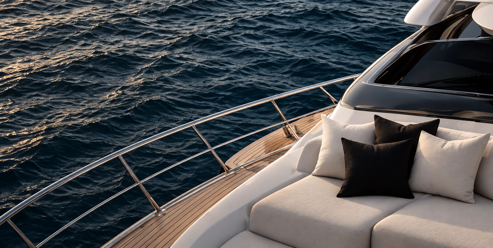
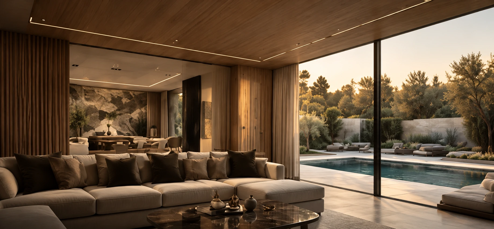
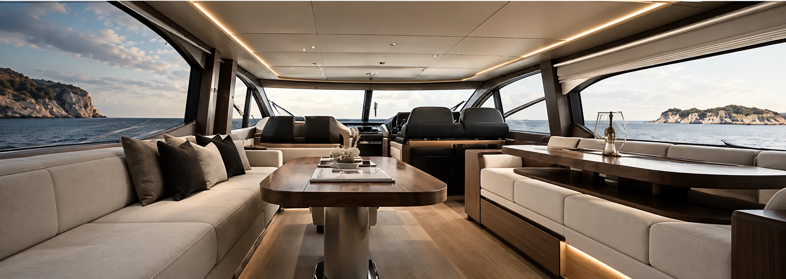
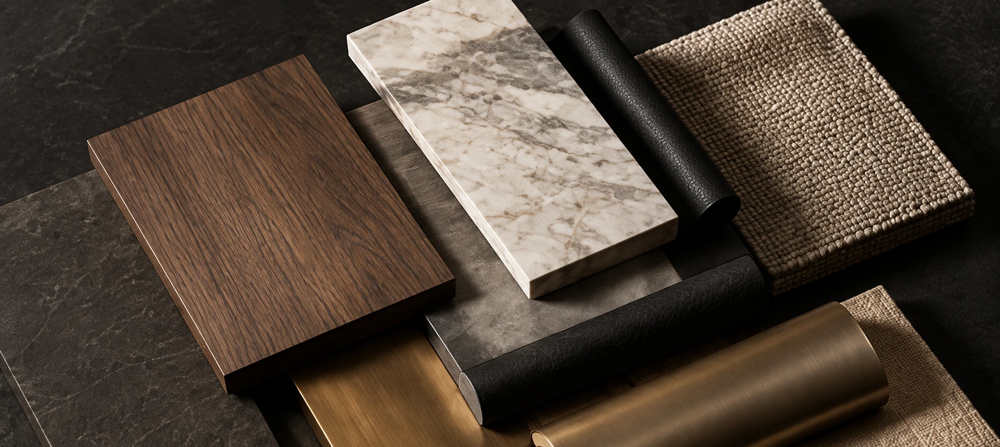

Bespoke interiors
Yachts.
Homes.
Cars.
Design, refit and bespoke interiors.
From concept to completion.
At sea
At home
On the road
At home
On the road
01 —— 03
Drag to explore · Princess V65

Yachts
Refit · interiors · bespoke
→
Homes
Interiors · renovations · custom
→
Cars
Interiors · detailing · personalisation
→Our approach
A seamless
process.
From the first idea to the final detail, we manage every step in-house and with trusted partners, ensuring a flawless result.
Our process →01Discover
02Survey
03Design
04Visualise
05Develop
06Build
07Install
08Deliver

Featured concept
Princess 56
Interior Refit
A refit concept blending modern design with timeless materials.
View project →Our materials
Exceptional
Materials.
Lasting Details.

We work with the world's finest materials, selected for beauty, performance and durability, across all environments.
Explore materials →